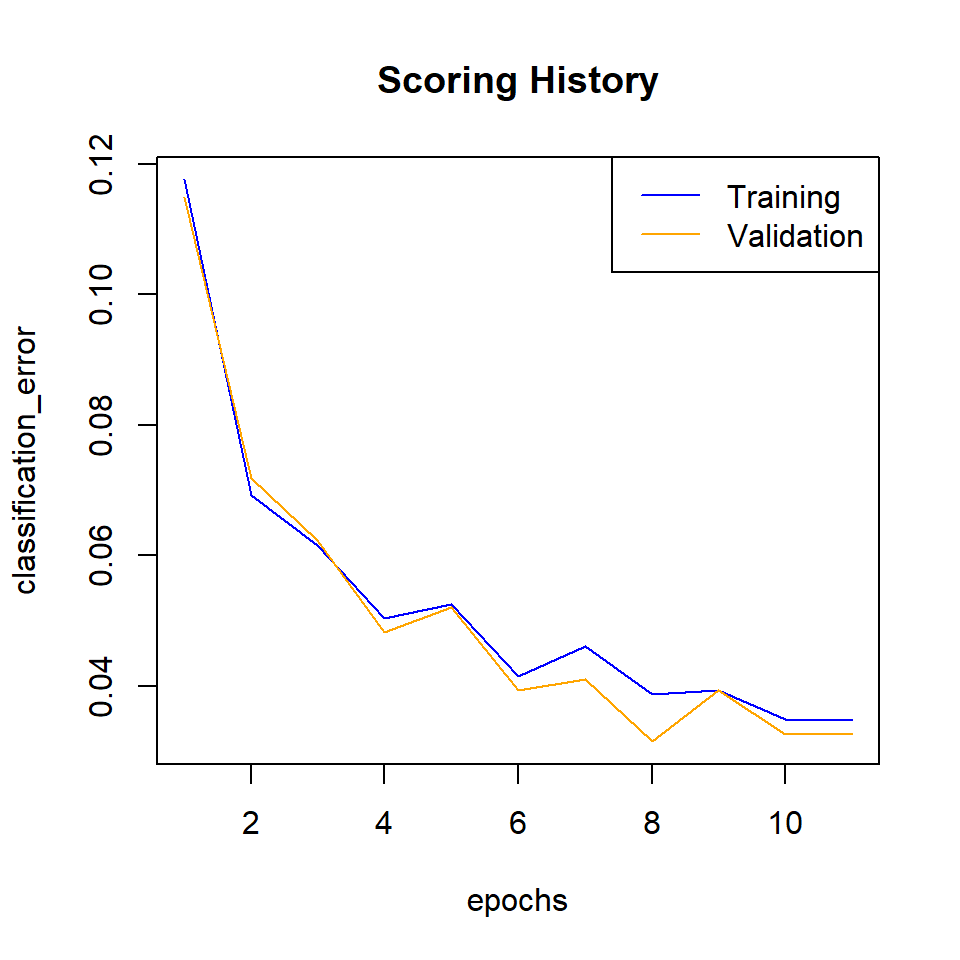
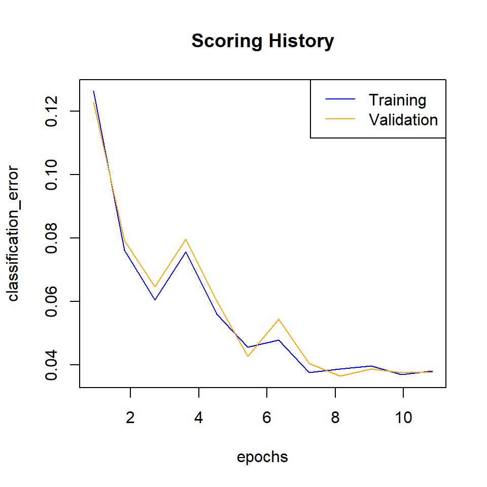
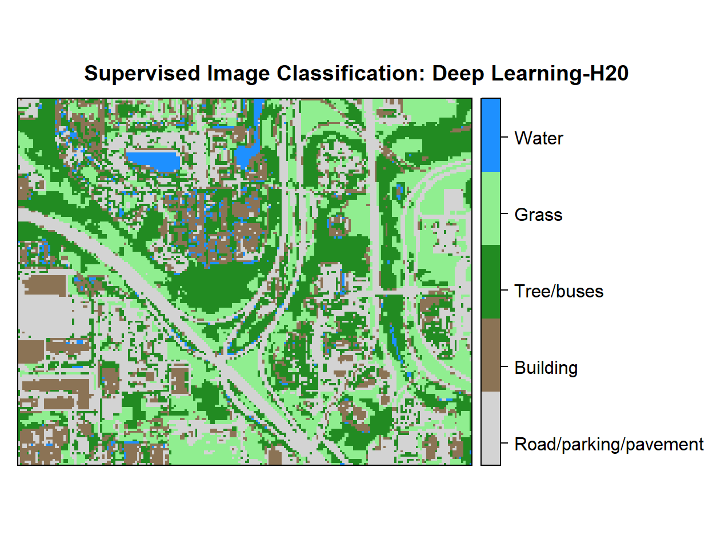

Deep Neural Network - Supervised Image Classification in H20 R
Deep Neural Networks (or Deep Dearning) is based on a multi-layer, feed-forward artificial neural network that is trained with stochastic gradient descent using back-propagation. The network can contain many hidden layers consisting of neurons with activation functions. Advanced features such as adaptive learning rate, rate annealing, momentum training, dropout, L1 or L2 regularization, checkpointing, and grid search enable high predictive accuracy. Each computer node trains a copy of the global model parameters on its local data with multi-threading (asynchronously) and contributes periodically to the global model via model averaging across the network.
In this tutorial will show how to implement a Deep Neural Network for pixel based supervised classification of Sentinel-2 multispectral images using the H20 package in R.
H2O is an open source, in-memory, distributed, fast, and scalable machine learning and predictive analytics platform that allows you to build machine learning models on big data and provides easy productionalization of those models in an enterprise environment. It’s core code is written in Java and can read data in parallel from a distributed cluster and also from local cluster. H2O allows access to all the capabilities of H2O from an external program or script via JSON over HTTP. The Rest API is used by H2O’s web interface (Flow UI), R binding (H2O-R), and Python binding (H2O-Python). Requirement and installation steps in R can be found here.
First, we will split the “point_data” into a training set (75% of the data), a validation set (12%) and a test set (13%) data. The validation data set will be used to optimize the model parameters during the training process. The model’s performance will be tested with the test data set. Finally, we will predict land use classes using a grid data set.
Tuning and Optimizations parameters:
Four hidden layers with 200 neurons and Rectifier Linear (ReLU) as an activation function for the of neurons.
The default stochastic gradient descent function will be used to optimize different objective functions and to minimize the training loss.
To reduce the generalization error and the risk of over-fitting of the model, we will use set low values for L1 and L2 regularizations.
The model will be cross validated with 10 folds with stratified sampling
The model will be run with 100 epochs.
More details about the of Tuning and Optimization parameters of the H20 Deep Neural Network for supervised classification can be found here
Load packages
library(rgdal) # spatial data processing
library(raster) # raster processing
library(plyr) # data manipulation
library(dplyr) # data manipulation
library(RStoolbox) # plotting raster data
library(ggplot2) # plotting
library(RColorBrewer) # Color
library(sp) # Spatial data
library(ggplot2) # PlottingThe data could be available for download from here.
# Define data folder
dataFolder<-"F://Spatial_Data_Processing_and_Analysis_R//Data//DATA_09//"Load point and grid data
point<-read.csv(paste0(dataFolder,".\\Sentinel_2\\point_data.csv"), header = T)
grid<-read.csv(paste0(dataFolder,".\\Sentinel_2\\prediction_grid_data.csv"), header = T)Creat data frames
point.data<-cbind(point[c(3:13)])
grid.data<-grid[c(4:13)]
grid.xy<-grid[c(3,1:2)]Install H2O
#install.packages("h20")Start and Initialize H20 local cluster
library(h2o)
localH2o <- h2o.init(nthreads = -1) Import data to H2O cluster
df<- as.h2o(point.data)
grid<- as.h2o(grid.data)Split data into train, validation and test dataset
splits <- h2o.splitFrame(df, c(0.75,0.125), seed=1234)
train <- h2o.assign(splits[[1]], "train.hex") # 75%
valid <- h2o.assign(splits[[2]], "valid.hex") # 12%
test <- h2o.assign(splits[[3]], "test.hex") # 13%Create response and features data sets
y <- "Class"
x <- setdiff(names(train), y)Model Fitting
dl_model <- h2o.deeplearning(
model_id="Deep_Learning", # Destination id for this model
training_frame=train, # Id of the training data frame
validation_frame=valid, # Id of the validation data frame
x=x, # a vector predictor variable
y=y, # name of reponse vaiables
standardize=TRUE, # standardize the data
score_training_samples=0, # training set samples for scoring (0 for all)
activation = "RectifierWithDropout", # Activation function
score_each_iteration = TRUE,
hidden = c(200,200,200,200), # 4 hidden layers, each of 200 neurons
hidden_dropout_ratios=c(0.2,0.1,0.1,0), # for improve generalization
stopping_tolerance = 0.001, # tolerance for metric-based stopping criterion
epochs=10, # the dataset should be iterated (streamed)
adaptive_rate=TRUE, # manually tuned learning rate
l1=1e-6, # L1/L2 regularization, improve generalization
l2=1e-6,
max_w2=10, # helps stability for Rectifier
nfolds=10, # Number of folds for K-fold cross-validation
fold_assignment="Stratified", # Cross-validation fold assignment scheme
keep_cross_validation_fold_assignment = TRUE,
seed=125,
reproducible = TRUE,
variable_importances=T
) Model Summary
summary(dl_model)## Model Details:
## ==============
##
## H2OMultinomialModel: deeplearning
## Model Key: Deep_Learning
## Status of Neuron Layers: predicting Class, 5-class classification, multinomial distribution, CrossEntropy loss, 123,805 weights/biases, 1.4 MB, 198,374 training samples, mini-batch size 1
## layer units type dropout l1 l2 mean_rate
## 1 1 10 Input 0.00 %
## 2 2 200 RectifierDropout 20.00 % 0.000001 0.000001 0.002778
## 3 3 200 RectifierDropout 10.00 % 0.000001 0.000001 0.017429
## 4 4 200 RectifierDropout 10.00 % 0.000001 0.000001 0.009463
## 5 5 200 RectifierDropout 0.00 % 0.000001 0.000001 0.026793
## 6 6 5 Softmax 0.000001 0.000001 0.044096
## rate_rms momentum mean_weight weight_rms mean_bias bias_rms
## 1
## 2 0.001755 0.000000 0.065016 0.182215 0.360042 0.080736
## 3 0.017699 0.000000 -0.029830 0.097819 0.916611 0.146557
## 4 0.012781 0.000000 -0.016788 0.078863 0.962554 0.029205
## 5 0.042380 0.000000 -0.007376 0.079870 0.835408 0.249331
## 6 0.168842 0.000000 -0.120609 0.190814 -0.182675 0.108195
##
## H2OMultinomialMetrics: deeplearning
## ** Reported on training data. **
## ** Metrics reported on full training frame **
##
## Training Set Metrics:
## =====================
##
## Extract training frame with `h2o.getFrame("train.hex")`
## MSE: (Extract with `h2o.mse`) 0.02795736
## RMSE: (Extract with `h2o.rmse`) 0.1672045
## Logloss: (Extract with `h2o.logloss`) 0.09567308
## Mean Per-Class Error: 0.02936676
## Confusion Matrix: Extract with `h2o.confusionMatrix(<model>,train = TRUE)`)
## =========================================================================
## Confusion Matrix: Row labels: Actual class; Column labels: Predicted class
## Class_1 Class_2 Class_3 Class_4 Class_5 Error Rate
## Class_1 4036 129 1 0 0 0.0312 = 130 / 4,166
## Class_2 153 3108 59 0 0 0.0639 = 212 / 3,320
## Class_3 169 11 5871 64 0 0.0399 = 244 / 6,115
## Class_4 0 0 39 3700 0 0.0104 = 39 / 3,739
## Class_5 0 0 1 0 693 0.0014 = 1 / 694
## Totals 4358 3248 5971 3764 693 0.0347 = 626 / 18,034
##
## Hit Ratio Table: Extract with `h2o.hit_ratio_table(<model>,train = TRUE)`
## =======================================================================
## Top-5 Hit Ratios:
## k hit_ratio
## 1 1 0.965288
## 2 2 0.997727
## 3 3 0.999834
## 4 4 1.000000
## 5 5 1.000000
##
##
## H2OMultinomialMetrics: deeplearning
## ** Reported on validation data. **
## ** Metrics reported on full validation frame **
##
## Validation Set Metrics:
## =====================
##
## Extract validation frame with `h2o.getFrame("valid.hex")`
## MSE: (Extract with `h2o.mse`) 0.02696643
## RMSE: (Extract with `h2o.rmse`) 0.1642146
## Logloss: (Extract with `h2o.logloss`) 0.09223192
## Mean Per-Class Error: 0.02655379
## Confusion Matrix: Extract with `h2o.confusionMatrix(<model>,valid = TRUE)`)
## =========================================================================
## Confusion Matrix: Row labels: Actual class; Column labels: Predicted class
## Class_1 Class_2 Class_3 Class_4 Class_5 Error Rate
## Class_1 643 17 0 0 0 0.0258 = 17 / 660
## Class_2 14 517 13 0 0 0.0496 = 27 / 544
## Class_3 30 3 962 8 0 0.0409 = 41 / 1,003
## Class_4 0 0 10 596 0 0.0165 = 10 / 606
## Class_5 0 0 0 0 111 0.0000 = 0 / 111
## Totals 687 537 985 604 111 0.0325 = 95 / 2,924
##
## Hit Ratio Table: Extract with `h2o.hit_ratio_table(<model>,valid = TRUE)`
## =======================================================================
## Top-5 Hit Ratios:
## k hit_ratio
## 1 1 0.967510
## 2 2 0.997264
## 3 3 0.999658
## 4 4 1.000000
## 5 5 1.000000
##
##
## H2OMultinomialMetrics: deeplearning
## ** Reported on cross-validation data. **
## ** 10-fold cross-validation on training data (Metrics computed for combined holdout predictions) **
##
## Cross-Validation Set Metrics:
## =====================
##
## Extract cross-validation frame with `h2o.getFrame("train.hex")`
## MSE: (Extract with `h2o.mse`) 0.02485955
## RMSE: (Extract with `h2o.rmse`) 0.1576691
## Logloss: (Extract with `h2o.logloss`) 0.08782037
## Mean Per-Class Error: 0.03186191
## Hit Ratio Table: Extract with `h2o.hit_ratio_table(<model>,xval = TRUE)`
## =======================================================================
## Top-5 Hit Ratios:
## k hit_ratio
## 1 1 0.967728
## 2 2 0.997948
## 3 3 0.999778
## 4 4 1.000000
## 5 5 1.000000
##
##
## Cross-Validation Metrics Summary:
## mean sd cv_1_valid cv_2_valid
## accuracy 0.9677325 0.004471162 0.9624711 0.95986986
## err 0.032267496 0.004471162 0.03752887 0.040130153
## err_count 58.2 8.184131 65.0 74.0
## logloss 0.08777085 0.0064328457 0.08648893 0.10182433
## max_per_class_error 0.05970799 0.011646003 0.09198813 0.061946902
## mean_per_class_accuracy 0.9683733 0.005520481 0.9589077 0.9662665
## mean_per_class_error 0.031626694 0.005520481 0.041092273 0.033733465
## mse 0.024850236 0.0019925938 0.025631974 0.028764095
## r2 0.9814064 0.0016099928 0.98136055 0.97792244
## rmse 0.1573793 0.0064027845 0.1600999 0.1695998
## cv_3_valid cv_4_valid cv_5_valid cv_6_valid
## accuracy 0.9775834 0.9651036 0.9725028 0.9720045
## err 0.022416621 0.0348964 0.027497195 0.027995521
## err_count 41.0 64.0 49.0 50.0
## logloss 0.07523714 0.101950675 0.07775727 0.089568794
## max_per_class_error 0.042735044 0.05940594 0.046838406 0.042600896
## mean_per_class_accuracy 0.98057896 0.963337 0.97552365 0.97674614
## mean_per_class_error 0.01942106 0.036662996 0.02447634 0.023253873
## mse 0.020924417 0.027235886 0.020564312 0.025608951
## r2 0.9839026 0.9789827 0.98461586 0.98124653
## rmse 0.14465275 0.16503298 0.14340262 0.16002797
## cv_7_valid cv_8_valid cv_9_valid cv_10_valid
## accuracy 0.96585906 0.96629214 0.97675705 0.95888156
## err 0.03414097 0.033707865 0.023242945 0.04111842
## err_count 62.0 60.0 42.0 75.0
## logloss 0.08825625 0.09100033 0.0754986 0.0901262
## max_per_class_error 0.054545455 0.06709265 0.045180723 0.084745765
## mean_per_class_accuracy 0.9645262 0.96686643 0.9751393 0.9558411
## mean_per_class_error 0.0354738 0.03313359 0.024860684 0.044158857
## mse 0.024415873 0.026147075 0.021330735 0.027879043
## r2 0.981828 0.9807052 0.98461044 0.9788895
## rmse 0.1562558 0.16170058 0.14605045 0.16697018
##
## Scoring History:
## timestamp duration training_speed epochs
## 1 2019-10-15 18:44:19 0.000 sec 0.00000
## 2 2019-10-15 18:44:37 3 min 25.928 sec 1056 obs/sec 1.00000
## 3 2019-10-15 18:44:53 3 min 42.052 sec 1147 obs/sec 2.00000
## 4 2019-10-15 18:45:07 3 min 56.659 sec 1221 obs/sec 3.00000
## 5 2019-10-15 18:45:21 4 min 10.270 sec 1284 obs/sec 4.00000
## 6 2019-10-15 18:45:36 4 min 24.924 sec 1305 obs/sec 5.00000
## 7 2019-10-15 18:45:49 4 min 37.840 sec 1348 obs/sec 6.00000
## 8 2019-10-15 18:46:02 4 min 50.726 sec 1380 obs/sec 7.00000
## 9 2019-10-15 18:46:14 5 min 3.508 sec 1409 obs/sec 8.00000
## 10 2019-10-15 18:46:27 5 min 15.886 sec 1436 obs/sec 9.00000
## 11 2019-10-15 18:46:39 5 min 28.416 sec 1458 obs/sec 10.00000
## 12 2019-10-15 18:46:52 5 min 40.711 sec 1477 obs/sec 11.00000
## iterations samples training_rmse training_logloss training_r2
## 1 0 0.000000
## 2 1 18034.000000 0.30807 0.31402 0.92909
## 3 2 36068.000000 0.23927 0.18531 0.95723
## 4 3 54102.000000 0.22067 0.16103 0.96362
## 5 4 72136.000000 0.19930 0.13696 0.97032
## 6 5 90170.000000 0.19737 0.12817 0.97090
## 7 6 108204.000000 0.18215 0.11356 0.97521
## 8 7 126238.000000 0.19155 0.12144 0.97259
## 9 8 144272.000000 0.16898 0.09833 0.97867
## 10 9 162306.000000 0.17510 0.10775 0.97709
## 11 10 180340.000000 0.15287 0.08055 0.98254
## 12 11 198374.000000 0.16720 0.09567 0.97911
## training_classification_error validation_rmse validation_logloss
## 1
## 2 0.11761 0.30326 0.30153
## 3 0.06920 0.24144 0.18801
## 4 0.06155 0.21938 0.15935
## 5 0.05040 0.19581 0.13044
## 6 0.05251 0.19743 0.12780
## 7 0.04148 0.17582 0.10935
## 8 0.04614 0.18189 0.10908
## 9 0.03865 0.16148 0.09300
## 10 0.03931 0.17383 0.10595
## 11 0.03488 0.15253 0.08104
## 12 0.03471 0.16421 0.09223
## validation_r2 validation_classification_error
## 1
## 2 0.93046 0.11491
## 3 0.95592 0.07182
## 4 0.96361 0.06224
## 5 0.97101 0.04822
## 6 0.97053 0.05198
## 7 0.97663 0.03933
## 8 0.97498 0.04104
## 9 0.98028 0.03146
## 10 0.97715 0.03933
## 11 0.98241 0.03249
## 12 0.97961 0.03249
##
## Variable Importances: (Extract with `h2o.varimp`)
## =================================================
##
## Variable Importances:
## variable relative_importance scaled_importance percentage
## 1 B2 1.000000 1.000000 0.135410
## 2 B5 0.912811 0.912811 0.123604
## 3 B11 0.903498 0.903498 0.122343
## 4 B12 0.837021 0.837021 0.113341
## 5 B3 0.805251 0.805251 0.109039
## 6 B4 0.755519 0.755519 0.102305
## 7 B8 0.698427 0.698427 0.094574
## 8 B6 0.521599 0.521599 0.070630
## 9 B8A 0.489297 0.489297 0.066256
## 10 B7 0.461545 0.461545 0.062498#capture.output(print(summary(dl_model)),file = "DL_summary_model_01.txt")Mean error
h2o.mean_per_class_error(dl_model, train = TRUE, valid = TRUE, xval = TRUE)## train valid xval
## 0.02936676 0.02655379 0.03186191Scoring history
scoring_history<-dl_model@model$scoring_history
#scoring_history
#write.csv(scoring_history, "scoring_history_model_02.csv")Plot the classification error
plot(dl_model,
timestep = "epochs",
metric = "classification_error")
Plot logloss
plot(dl_model,
timestep = "epochs",
metric = "logloss")
Cross-validation Error
# Get the CV models from the deeplearning model object` object
cv_models <- sapply(dl_model@model$cross_validation_models,
function(i) h2o.getModel(i$name))
# Plot the scoring history over time
plot(cv_models[[1]],
timestep = "epochs",
metric = "classification_error")
Cross validation result
print(dl_model@model$cross_validation_metrics_summary%>%.[,c(1,2)])## mean sd
## accuracy 0.9677325 0.004471162
## err 0.032267496 0.004471162
## err_count 58.2 8.184131
## logloss 0.08777085 0.0064328457
## max_per_class_error 0.05970799 0.011646003
## mean_per_class_accuracy 0.9683733 0.005520481
## mean_per_class_error 0.031626694 0.005520481
## mse 0.024850236 0.0019925938
## r2 0.9814064 0.0016099928
## rmse 0.1573793 0.0064027845#capture.output(print(dl_model@model$cross_validation_metrics_summary%>%.[,c(1,2)]),file = "DL_CV_model_01.txt")Model performance with Test data set
Compare the training error with the validation and test set errors
h2o.performance(dl_model, newdata=train) ## full train data## H2OMultinomialMetrics: deeplearning
##
## Test Set Metrics:
## =====================
##
## MSE: (Extract with `h2o.mse`) 0.02795736
## RMSE: (Extract with `h2o.rmse`) 0.1672045
## Logloss: (Extract with `h2o.logloss`) 0.09567308
## Mean Per-Class Error: 0.02936676
## Confusion Matrix: Extract with `h2o.confusionMatrix(<model>, <data>)`)
## =========================================================================
## Confusion Matrix: Row labels: Actual class; Column labels: Predicted class
## Class_1 Class_2 Class_3 Class_4 Class_5 Error Rate
## Class_1 4036 129 1 0 0 0.0312 = 130 / 4,166
## Class_2 153 3108 59 0 0 0.0639 = 212 / 3,320
## Class_3 169 11 5871 64 0 0.0399 = 244 / 6,115
## Class_4 0 0 39 3700 0 0.0104 = 39 / 3,739
## Class_5 0 0 1 0 693 0.0014 = 1 / 694
## Totals 4358 3248 5971 3764 693 0.0347 = 626 / 18,034
##
## Hit Ratio Table: Extract with `h2o.hit_ratio_table(<model>, <data>)`
## =======================================================================
## Top-5 Hit Ratios:
## k hit_ratio
## 1 1 0.965288
## 2 2 0.997727
## 3 3 0.999834
## 4 4 1.000000
## 5 5 1.000000h2o.performance(dl_model, newdata=valid) ## full validation data## H2OMultinomialMetrics: deeplearning
##
## Test Set Metrics:
## =====================
##
## MSE: (Extract with `h2o.mse`) 0.02696643
## RMSE: (Extract with `h2o.rmse`) 0.1642146
## Logloss: (Extract with `h2o.logloss`) 0.09223192
## Mean Per-Class Error: 0.02655379
## Confusion Matrix: Extract with `h2o.confusionMatrix(<model>, <data>)`)
## =========================================================================
## Confusion Matrix: Row labels: Actual class; Column labels: Predicted class
## Class_1 Class_2 Class_3 Class_4 Class_5 Error Rate
## Class_1 643 17 0 0 0 0.0258 = 17 / 660
## Class_2 14 517 13 0 0 0.0496 = 27 / 544
## Class_3 30 3 962 8 0 0.0409 = 41 / 1,003
## Class_4 0 0 10 596 0 0.0165 = 10 / 606
## Class_5 0 0 0 0 111 0.0000 = 0 / 111
## Totals 687 537 985 604 111 0.0325 = 95 / 2,924
##
## Hit Ratio Table: Extract with `h2o.hit_ratio_table(<model>, <data>)`
## =======================================================================
## Top-5 Hit Ratios:
## k hit_ratio
## 1 1 0.967510
## 2 2 0.997264
## 3 3 0.999658
## 4 4 1.000000
## 5 5 1.000000h2o.performance(dl_model, newdata=test) ## full test data## H2OMultinomialMetrics: deeplearning
##
## Test Set Metrics:
## =====================
##
## MSE: (Extract with `h2o.mse`) 0.02619048
## RMSE: (Extract with `h2o.rmse`) 0.1618347
## Logloss: (Extract with `h2o.logloss`) 0.08859117
## Mean Per-Class Error: 0.02621799
## Confusion Matrix: Extract with `h2o.confusionMatrix(<model>, <data>)`)
## =========================================================================
## Confusion Matrix: Row labels: Actual class; Column labels: Predicted class
## Class_1 Class_2 Class_3 Class_4 Class_5 Error Rate
## Class_1 684 23 1 0 0 0.0339 = 24 / 708
## Class_2 14 543 8 0 0 0.0389 = 22 / 565
## Class_3 34 2 936 7 0 0.0439 = 43 / 979
## Class_4 0 0 9 619 0 0.0143 = 9 / 628
## Class_5 0 0 0 0 107 0.0000 = 0 / 107
## Totals 732 568 954 626 107 0.0328 = 98 / 2,987
##
## Hit Ratio Table: Extract with `h2o.hit_ratio_table(<model>, <data>)`
## =======================================================================
## Top-5 Hit Ratios:
## k hit_ratio
## 1 1 0.967191
## 2 2 0.996987
## 3 3 1.000000
## 4 4 1.000000
## 5 5 1.000000#capture.output(print(h2o.performance(dl_model,test)),file = "test_data_model_01.txt")Confusion matrix
train.cf<-h2o.confusionMatrix(dl_model)
print(train.cf)
valid.cf<-h2o.confusionMatrix(dl_model,valid=TRUE)
print(valid.cf)
test.cf<-h2o.confusionMatrix(dl_model,test)
print(test.cf)
#write.csv(train.cf, "CFM_train_model_01.csv")
#write.csv(valid.cf, "CFM_valid_model_01.csv")
#write.csv(test.cf, "CFM_test_moldel_01.csv")Grid Prediction
g.predict = as.data.frame(h2o.predict(object = dl_model, newdata = grid))Stop h20 cluster
# h2o.shutdown(prompt=FALSE)Extract Prediction Class
# Extract predicted landuse class
grid.xy$Class<-g.predict$predict
# Import lnaduse ID file
ID<-read.csv(paste0(dataFolder,".\\Sentinel_2\\Landuse_ID.csv"), header=T)
# Join landuse ID
grid.new<-join(grid.xy, ID, by="Class", type="inner")
# Omit missing values
grid.new.na<-na.omit(grid.new) Convert to raster and write
x<-SpatialPointsDataFrame(as.data.frame(grid.new.na)[, c("x", "y")], data = grid.new.na)
r <- rasterFromXYZ(as.data.frame(x)[, c("x", "y", "Class_ID")])Plot map
# Create color palette
myPalette <- colorRampPalette(c("light grey","burlywood4", "forestgreen","light green", "dodgerblue"))
# Plot Map
LU<-spplot(r,"Class_ID", main="Supervised Image Classification: Deep Learning-H20" ,
colorkey = list(space="right",tick.number=1,height=1, width=1.5,
labels = list(at = seq(1,4.8,length=5),cex=1.0,
lab = c("Road/parking/pavement" ,"Building", "Tree/buses", "Grass", "Water"))),
col.regions=myPalette,cut=4)
LU
Write raster
# writeRaster(r, filename = paste0(dataFolder,".\\Sentinel_2\\DNN_H20_Landuse.tiff"), "GTiff", overwrite=T)rm(list = ls())